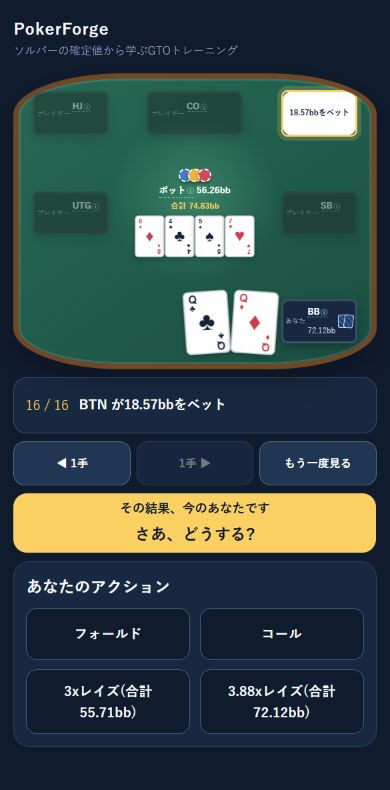
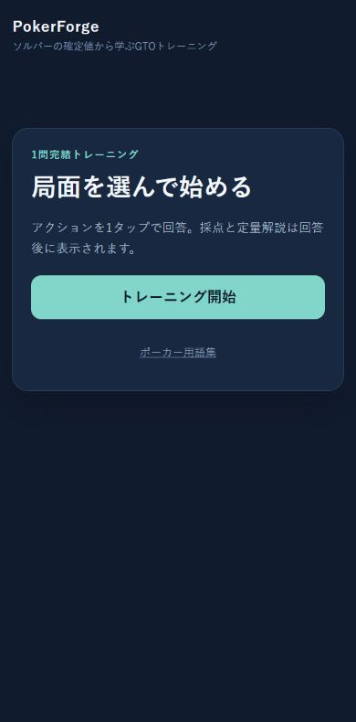

POKER LEARNING WEB APP個人開発
PokerForgeポーカーのポストフロップ学習PWA
ポーカーの局面を見てアクションを選び、期待値（EV）の差から判断を振り返る多択トレーナー。既存のソルバーを組み込んだRust製の教材生成CLIと、Nuxt製の学習PWAで構成しています。
公開版を開くここで紹介するのはローカル開発版です。公開版とは画面・機能が異なります。
制作の背景
学生時代から親しんできたポーカーを題材に、学習を支えるアプリを個人開発しています。選んだアクションを単なる正誤で終わらせず、ソルバーの計算結果に基づいて振り返る構成にしています。
主な機能
- 局面のアクション再生と、多択形式の問題演習
- EV差に基づく4段階の採点と、アクション別の頻度・EVの表示
- 回答履歴の端末内保存と、読み込み済み教材のオフライン利用への対応
- ポーカー用語集と、LLMで解説を深めるためのプロンプトのコピー
アプリの画面
ローカル開発版 / テスト用教材で撮影


DESIGN DECISIONS
実装で意識したこと
- 教材生成と学習UIの責務を分ける
- ソルバーの計算結果を使った採点はRust側で事前に行い、PWAは保存された採点値を表示します。LLM向けには確定した数値を含む解説用プロンプトを用意し、正解の決定とは役割を分けています。
- 言語をまたぐデータ形式をそろえる
- Rustのデータ型からJSON Schemaを出力し、TypeScriptの型と読み込み時の検証器を生成。教材を生成する側と利用する側で、受け渡す形式を共有しています。
- 回答前後で渡す情報を分ける
- 回答前の選択肢コンポーネントに渡すのは、選択肢の識別子とアクションです。採点値や解説は回答後に表示する構成にしています。